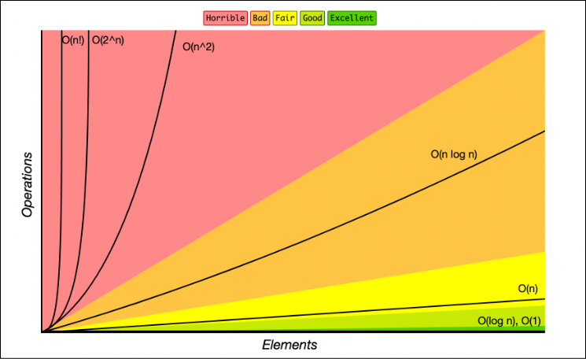
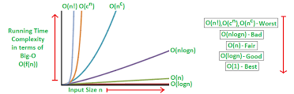
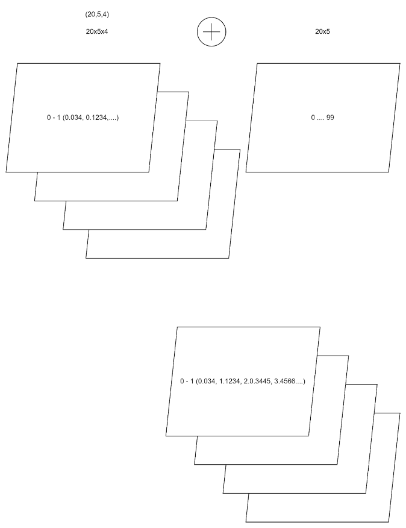
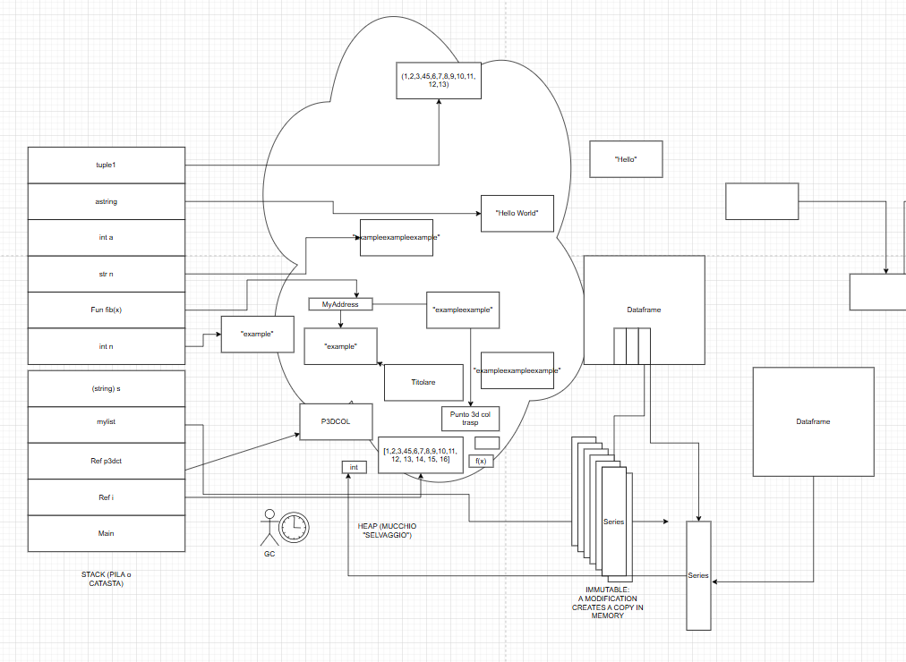
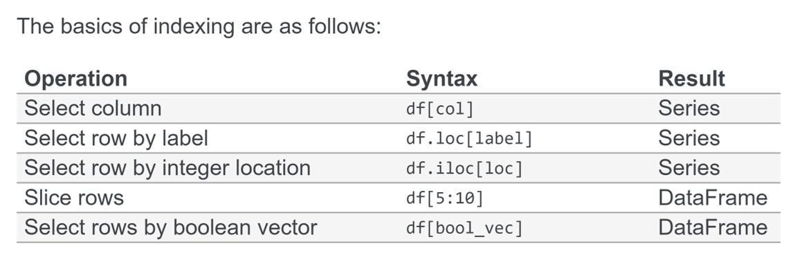
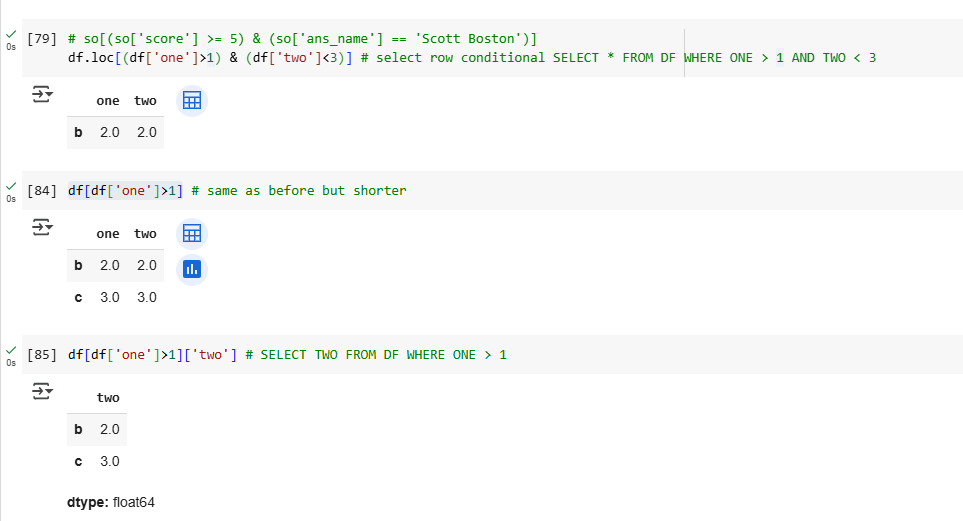

Obiettivi di apprendimento
- Scegliere tra liste, tuple, dizionari e set.
- Usare `if`, `elif`, `else`, `for`, `while` e comprehension.
- Leggere e scrivere file testuali e strutturati.
- Capire le basi di NumPy e Pandas per analisi dati in memoria.
- Usare indexing, filtering, grouping, I/O e visualizzazione.
Output atteso
Uno script o notebook capace di leggere dati, organizzarli in strutture Python, elaborarli con funzioni e salvarli o visualizzarli con Pandas.
1. Numeri, costi e NumPy
1.1 Perche introdurre NumPy
Nei materiali delle erogazioni NumPy entra subito dopo i fondamentali Python per mostrare come trattare array omogenei, tipi numerici controllati e operazioni vettoriali piu efficienti dei cicli manuali.
La terminologia ricorrente e quella di ndarray, shape, dimensione, array 1D/2D/3D e dtype, con particolare attenzione a numpy.float64 e ai tipi numerici piu adatti al calcolo scientifico.


1.2 Creazione di array e broadcasting
Gli appunti mostrano la creazione di array da liste, da intervalli, da generatori casuali e l'uso del broadcasting, descritto come una forma di espansione logica dei dati per applicare operazioni vettoriali a dimensionalita diverse.

Quando i dati non stanno comodamente in memoria, gli appunti citano Dask, Hadoop e Spark come alternative per il calcolo distribuito.
2. Modello dati di Pandas
2.1 Serie e DataFrame
Pandas e presentato come libreria per data analysis, con un modello centrato su Series e DataFrame. Una Series e una sequenza indicizzata di valori omogenei o quasi omogenei; piu Series accostate formano un DataFrame.
Nel materiale compare piu volte il concetto di indice, esplicito o implicito, e l'analogia con una colonna di database.

2.2 Dtype, omogeneita e mutabilita
Le Series cercano un dtype coerente; se i valori sono eterogenei, il tipo diventa object. Il comportamento e diverso dagli ndarray di NumPy e diventa rilevante quando si ragiona su aggiornamenti, replacement e creazione di nuove colonne.
Nei materiali si insiste sul fatto che l'indice e la chiave di lettura della Series, e che le operazioni su dataframe e series spesso lavorano per etichetta, non per posizione grezza.
3. Indexing e filtering
3.1 Selezione per colonna, riga e posizione
Gli appunti presentano chiaramente le varianti principali: df[col], df.loc[label], df.iloc[pos], slicing delle righe e filtri booleani.

3.2 Filtri condizionali
La forma piu usata negli esempi e il filtraggio booleano: una condizione costruisce un vettore di True/False che viene poi applicato al DataFrame.
df[(df["one"] > 1) & (df["two"] < 3)]
4. Operazioni principali
4.1 Ordinamento, descrizione e grouping
Il materiale delle erogazioni include esercizi su filtraggio, sorting, grouping e visualizzazione. La lettura consigliata e quella di un workflow: carico i dati, li pulisco, seleziono le colonne utili, aggrego e poi visualizzo.
4.2 Time series e mutabilita
Tra i temi citati ci sono anche il tempo in Python, le serie temporali in Pandas e la differenza tra aggiungere una colonna trasformata e sostituire una colonna esistente.
4.3 Uno sguardo all'ecosistema
Gli appunti richiamano sia librerie come Plotly sia ambienti di lavoro come Jupyter, oltre a collegamenti pratici con SQL, Oracle e data warehouse quando si lavora con dati reali.
5. I/O, BigQuery e fonti esterne
5.1 Lettura e scrittura
Pandas viene presentato come libreria con molti lettori: read_csv, read_json, read_xml, read_excel, read_sql_query, read_hdfs e altri. Il punto non e memorizzare ogni funzione, ma capire che il DataFrame puo essere un punto di arrivo naturale per sorgenti eterogenee.
5.2 BigQuery
Negli appunti compare l'integrazione con BigQuery tramite la documentazione Pandas I/O e pandas-gbq, utile quando i dati stanno in un warehouse esterno e non localmente.
5.3 Dati da database, Excel e file di scambio
Le note citano anche database, fogli Excel e formati di interscambio come parte del lavoro quotidiano con Pandas.
6. Visualizzazione e tecniche avanzate
6.1 Visualizzazione con Pandas
Gli appunti citano la documentazione sulle visualizzazioni di Pandas e un tutorial Plotly per passare da analisi tabellare a grafici piu ricchi e interattivi.
6.2 Tecniche avanzate
Vengono richiamati anche argomenti come pulizia, summarization, manipolazione avanzata e l'uso di Dask quando la strategia in memoria non basta piu.
In questa parte la regola pratica e semplice: mantenere il dataset il piu possibile leggibile, ridurre il rumore e scegliere la libreria giusta per il tipo di analisi.
7. Materiali ed esercizi
Qui raccolgo i notebook e i riferimenti emersi nelle due erogazioni, raggruppati per tema.
- Introduzione a NumPy
- NumPy creation basics
- NumPy float64
- Pandas getting started
- Introduzione ai DataFrame
- Pandas data exploration
- Esercizio autonomo sul caricamento
- Filtering and sorting
- Grouping
- Grouping exercise
- Visualisation
- Pandas visualization guide
- Some data manipulation advanced techniques
- Importing data with pandas
- Plotly tutorial
- Pandas I/O guide
- Pandas BigQuery I/O
- pandas-gbq
- Dask
Laboratorio guidato
Esercizio
Caricare un dataset in Pandas, filtrarlo con una condizione, raggrupparlo per una colonna categorica, produrre una tabella riassuntiva e salvare o visualizzare il risultato.
Riepilogo
- NumPy offre array omogenei e operazioni vettoriali efficienti.
- Pandas aggiunge indice, Series, DataFrame e un ecosistema di lettura, trasformazione e analisi dati.
- Indexing, filtering, I/O e visualizzazione sono le quattro operazioni piu importanti da memorizzare all'inizio.